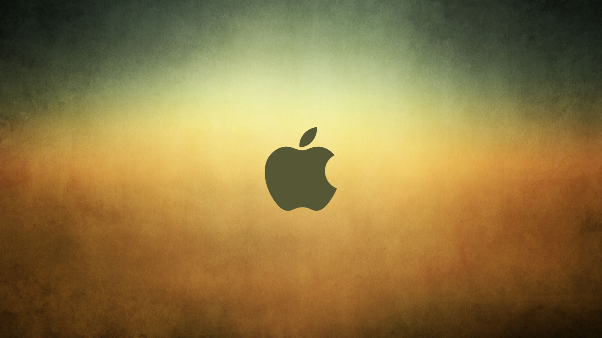
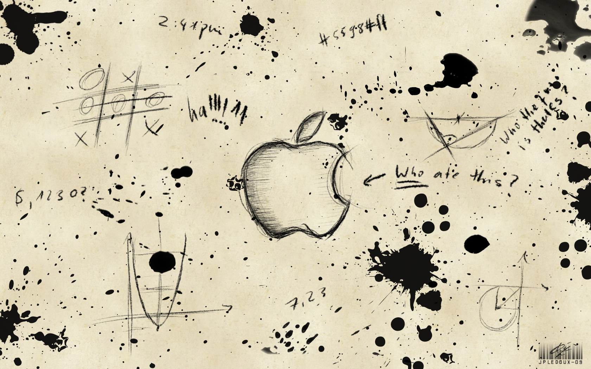
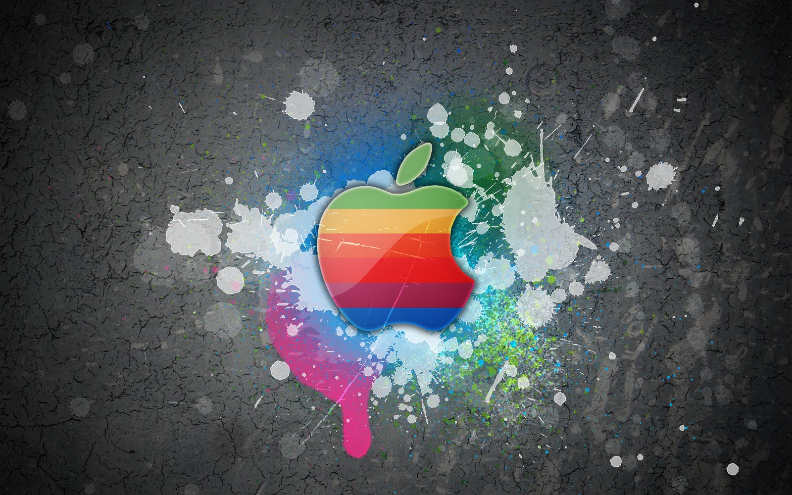
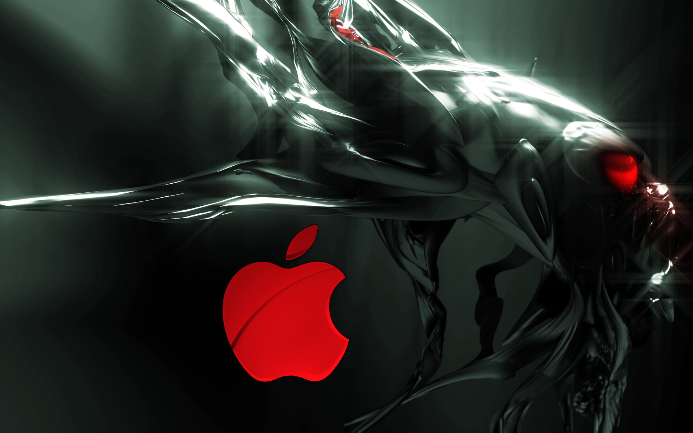
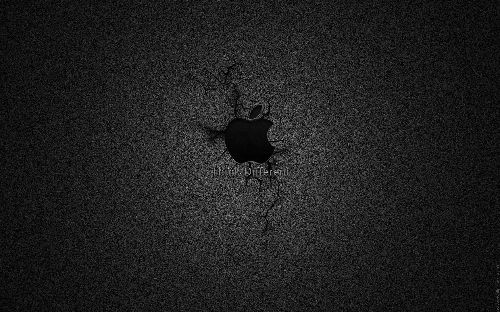
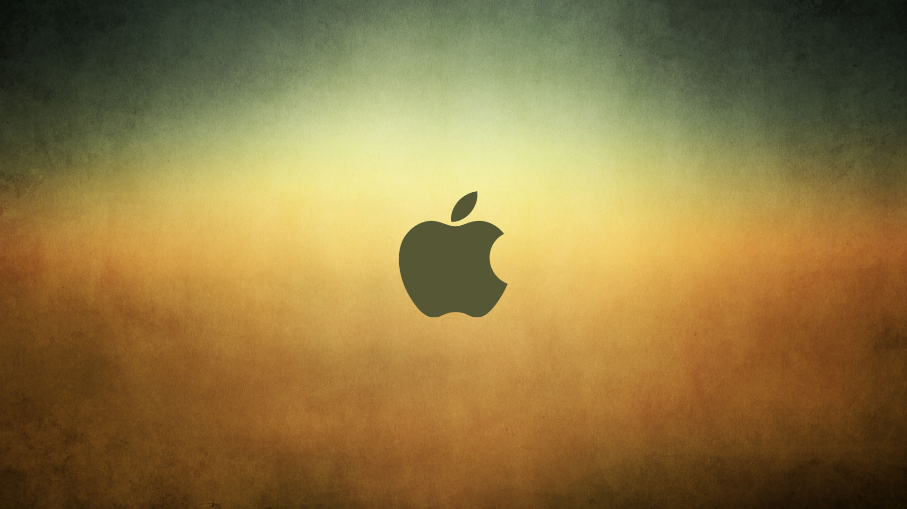
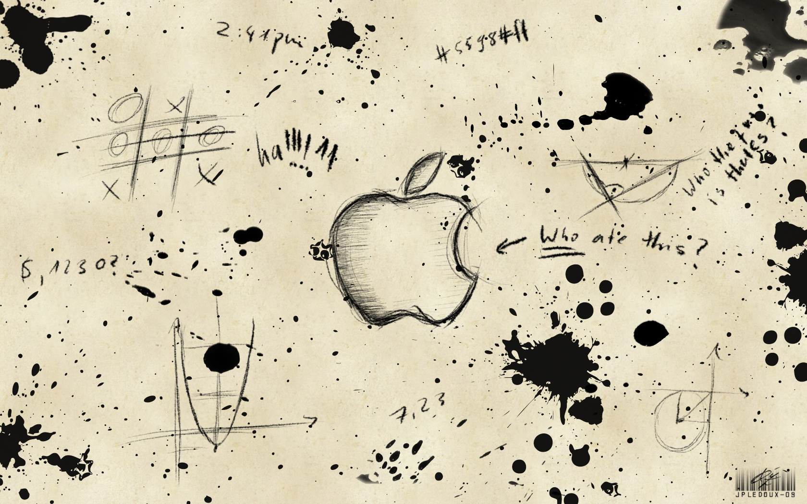
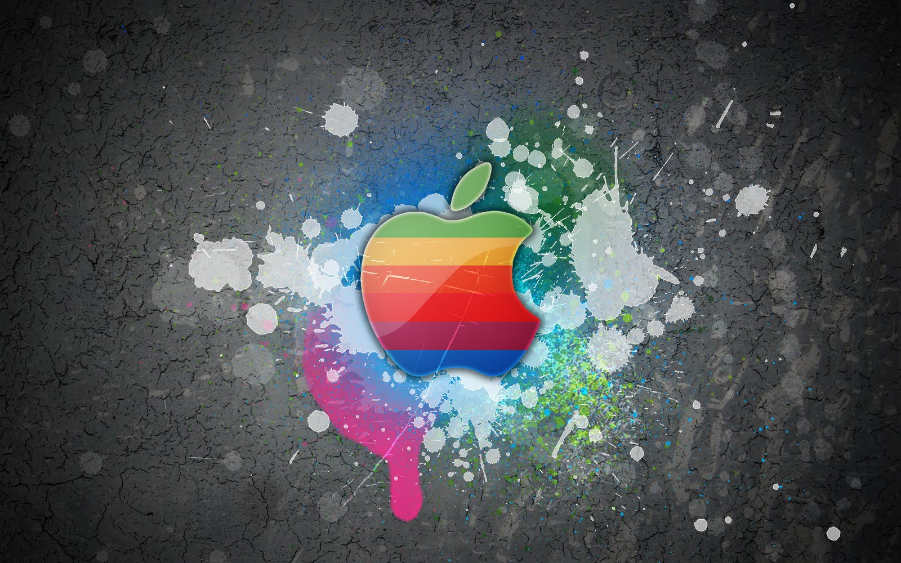
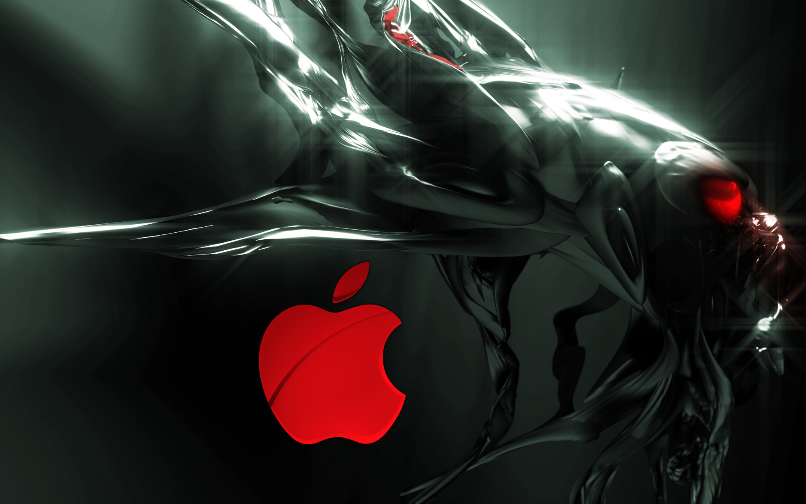
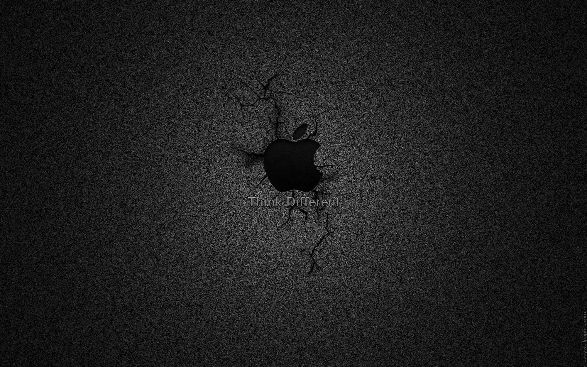

INTRODUCCIÓN
En este tipo de computación todo lo que puede ofrecer un sistema informático se ofrece como servicio, de modo que los usuarios puedan acceder a los servicios disponibles "en la nube de Internet" sin conocimientos (o, al menos sin ser expertos) en la gestión de los recursos que usan. Según el IEEE Computer Society, es un paradigma en el que la información se almacena de manera permanente en servidores de Internet y se envía a cachés La computación en la nube son servidores desde Internet encargados de atender las peticiones en cualquier momento. Se puede tener acceso a su información o servicio, mediante una conexión a internet desde cualquier dispositivo móvil o fijo ubicado en cualquier lugar. Sirven a sus usuarios desde varios proveedores de alojamiento repartidos frecuentemente por todo el mundo. Esta medida reduce los costos, garantiza un mejor tiempo de actividad y que los sitios web sean invulnerables a los delincuentes informáticos, a los gobiernos locales y a sus redadas policiales pertenecientes.
COMIENZOS
El concepto de la computación en la nube empezó en proveedores de servicio de Internet a gran escala, como Google, Amazon AWS, Microsoft y otros que construyeron su propia infraestructura. De entre todos ellos emergió una arquitectura: un sistema de recursos distribuidos horizontalmente, introducidos como servicios virtuales de TI escalados masivamente y manejados como recursos configurados y mancomunados de manera continua. Las granjas de servidores, sobre las que escribió Gilder, eran similares en su arquitectura al procesamiento “grid” (red, rejilla), pero mientras que las redes se utilizan para aplicaciones de procesamiento técnico débilmente acoplados (loosely coupled), un sistema compuesto de subsistemas con cierta autonomía de acción, que mantienen una interrelación continua entre ellos.
HISTORIA
El concepto fundamental de la entrega de los recursos informáticos a través de una red global tiene sus raíces en los años sesenta. La idea de una "red de computadoras intergaláctica" la introdujo en los años sesenta JCR Licklider, cuya visión era que todo el mundo pudiese estar interconectado y poder acceder a los programas y datos desde cualquier lugar, según Margaret Lewis, directora de mercadotecnia de producto de AMD. "Es una visión que se parece mucho a lo que llamamos cloud computing. Desde los años sesenta, la computación en nube se ha desarrollado a lo largo de una serie de líneas. La Web 2.0 es la evolución más reciente. Sin embargo, como Internet no empezó a ofrecer ancho de banda significativo hasta los años noventa, la computación en la nube ha sufrido algo así como un desarrollo tardío. Uno de los primeros hitos de la computación en nube es la llegada de Salesforce.com en 1999, que fue pionero en el concepto de la entrega de aplicaciones empresariales a través de una página web simple. La firma de servicios allanó el camino para que tanto especialistas como empresas tradicionales de software pudiesen publicar sus aplicaciones a través de Internet.
CARACTERÍSTICAS
La computación en nube presenta las siguientes características clave:
* Agilidad: Capacidad de mejora para ofrecer recursos tecnológicos al usuario por parte del proveedor.
* Rendimiento: Los sistemas en la nube controlan y optimizan el uso de los recursos de manera automática, dicha característica permite un seguimiento, control y notificación del mismo. Esta capacidad aporta transparencia tanto para el consumidor o el proveedor de servicio.
* Seguridad: puede mejorar debido a la centralización de los datos. La seguridad es a menudo tan bueno o mejor que otros sistemas tradicionales, en parte porque los proveedores son capaces de dedicar recursos a la solución de los problemas de seguridad que muchos clientes no pueden permitirse el lujo de abordar.
* Mantenimiento: en el caso de las aplicaciones de computación en la nube, es más sencillo, ya que no necesitan ser instalados en el ordenador de cada usuario y se puede acceder desde diferentes lugares.
VENTAJAS
* Integración probada de servicios Red. Por su naturaleza, la tecnología de cloud computing se puede integrar con mucha mayor facilidad y rapidez con el resto de las aplicaciones empresariales (tanto software tradicional como Cloud Computing basado en infraestructuras), ya sean desarrolladas de manera interna o externa.
* Implementación más rápida y con menos riesgos, ya que se comienza a trabajar más rápido y no es necesaria una gran inversión.
* Actualizaciones automáticas que no afectan negativamente a los recursos de TI.
* Una infraestructura 100% de cloud computing permite también al proveedor de contenidos o servicios en la nube prescindir de instalar cualquier tipo de software, ya que éste es provisto por el proveedor de la infraestructura o la plataforma en la nube.
* Contribuye al uso eficiente de la energía. En este caso, a la energía requerida para el funcionamiento de la infraestructura.
DESVENTAJAS
* La centralización de las aplicaciones y el almacenamiento de los datos origina una interdependencia de los proveedores de servicios.
* La disponibilidad de las aplicaciones está sujeta a la disponibilidad de acceso a Internet.
* La confiabilidad de los servicios depende de la "salud" tecnológica y financiera de los proveedores de servicios en nube.
* La disponibilidad de servicios altamente especializados podría tardar meses o incluso años para que sean factibles de ser desplegados en la red
* Seguridad. La información de la empresa debe recorrer diferentes nodos para llegar a su destino, cada uno de ellos (y sus canales) son un foco de inseguridad.